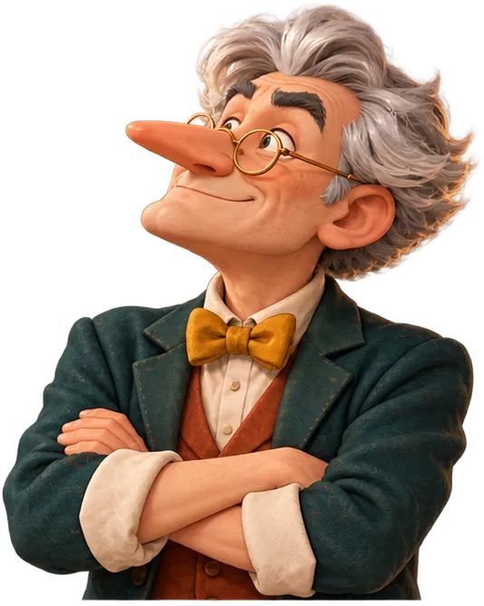
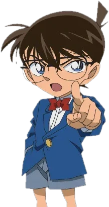
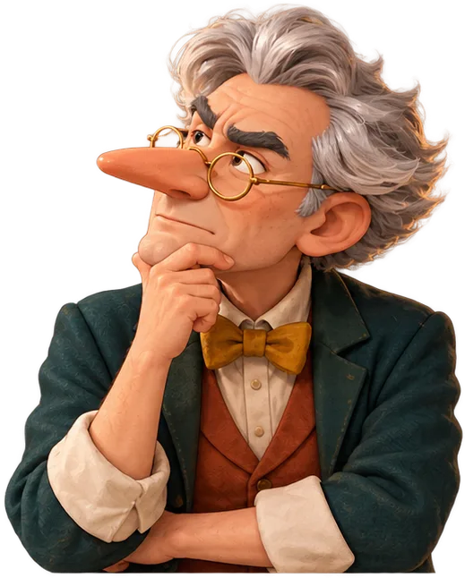
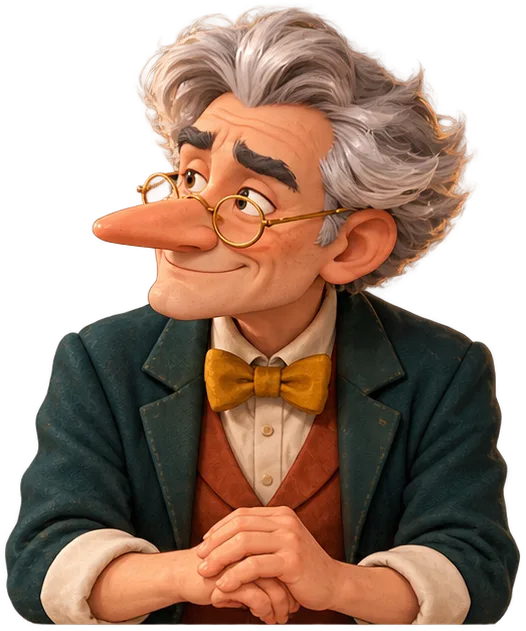
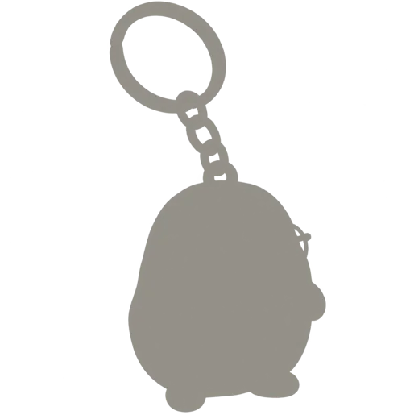
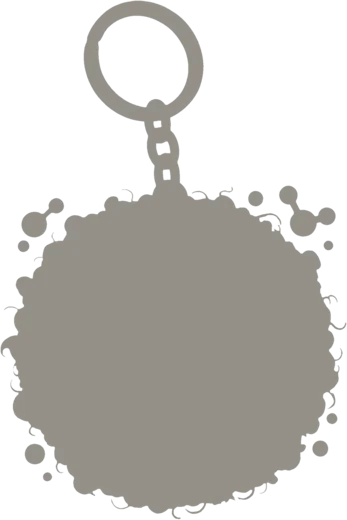
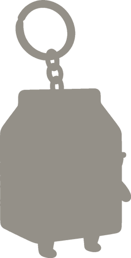
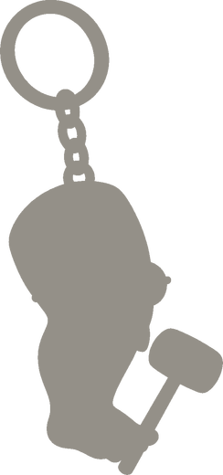

증거와 주장 사이의 연결 고리를
쓰게 만드는 과학 서술 게임

콧대 교수
© 명탐정 코난한 학급의 평균 점수(4점 만점).
표본 8명 중 4명은 연결이 아예 없었다.
서답형 8개 핵심 개념의 평균 수준.
현상의 원인을 원리로 설명하는 단계까지 간 학생은 많지 않았다.
그런데 고등학생 답안에서도 연결 고리는 비어 있었습니다.
그래서 시작점을 중학교로 잡았습니다.

이 둘이 문장에 드러나면, '과학적 설명'에 가까워집니다
시연에 앞서 · 가정한 수업 상황
질량 보존과 철의 연소를 주제로 한 미션 게임
질량 보존 · 연소 과정에서 철과 산소의 결합





Hoffenberg, R., & Saxton, E. (2015). Scientific explanations: A comparative case study of teacher practice and student performance. Electronic Journal of Science Education, 19(5). ejse.southwestern.edu
이기영, 동효관, 최원호, 권경필, 이인호, 김용진 (2017). 국가수준 학업성취도 평가의 서답형 문항을 이용한 중학교 과학 8개 핵심 개념에 대한 학습발달과정 탐색. 과학교육연구지, 41(3), 382–404. doi.org/10.21796/jse.2017.41.3.382
Berland, L. K., & Reiser, B. J. (2009). Making sense of argumentation and explanation. Science Education, 93(1), 26–55.
교육부 (2022). 과학과 교육과정 (교육부 고시 제2022-33호 [별책 9]).
임태훈 외. 『중학 과학 3』. 비상교육. 26–27쪽.
학생 답안: 2023년 「통합과학 서술형 답안 피드백 연구」 참여 중 다룬 실제 답안 (연구실 사용 허가).
4장의 막대(3·2·1)는 조 학급의 평균 점수입니다. 4장에서는 ‘추론’을 ‘연결’로 옮겼습니다.
| 조 학급 | 소니아 학급 | |
|---|---|---|
| 주장 | 3 | 3 |
| 증거 | 2 | 4 |
| 추론(연결) | 1 | 3 |
8명 중 4명은 논리적 추론도 과학 개념도 쓰지 않아 0점 p.12
조 교사는 설명을 ‘지식 주장(knowledge claim)’, 곧 실험 증거에 기반한 일반화된 주장으로 정의해 가르쳤습니다 p.19. 저자들은 이 정의가 주장과 증거를 한 덩어리로 묶고, 과학 이론으로 결과를 이해하는 추론을 빼놓았다고 봅니다 p.27.
수집한 자료로 보아 가설이 옳았다. 열은 반응을 빠르게 한다. 70 °C에서 평균 17.64초, 40 °C에서 25.05초, 실온에서 116.80초. 그러므로 열은 반응 속도를 높인다.
주장과 증거는 분명하지만, 왜 그런지(분자 운동론)는 한 줄도 없다는 것이 저자들의 평가입니다.
1.66 / 5수준 · 수준 2 이하의 낮은 단계
응답 비율. 같은 문제 상황에서도 이유를 쓰는 칸에서 응답이 크게 줄었고, 전체 답안의 76%가 무의미한 답변 또는 무응답이었습니다.
반면 문항 2(자기장 속 도선이 받는 힘)는 무의미·무응답이 하위 문항별 약 16%·27%로 훨씬 적었습니다 p.392–393. 개념마다 차이가 큽니다.
강철솜 미션은 수준 5에서 한 걸음 더 갑니다: 늘어난 0.5 g이 그 산소의 질량이고, 닫힌 플라스크는 드나든 물질이 없어 그대로라는 연결까지.